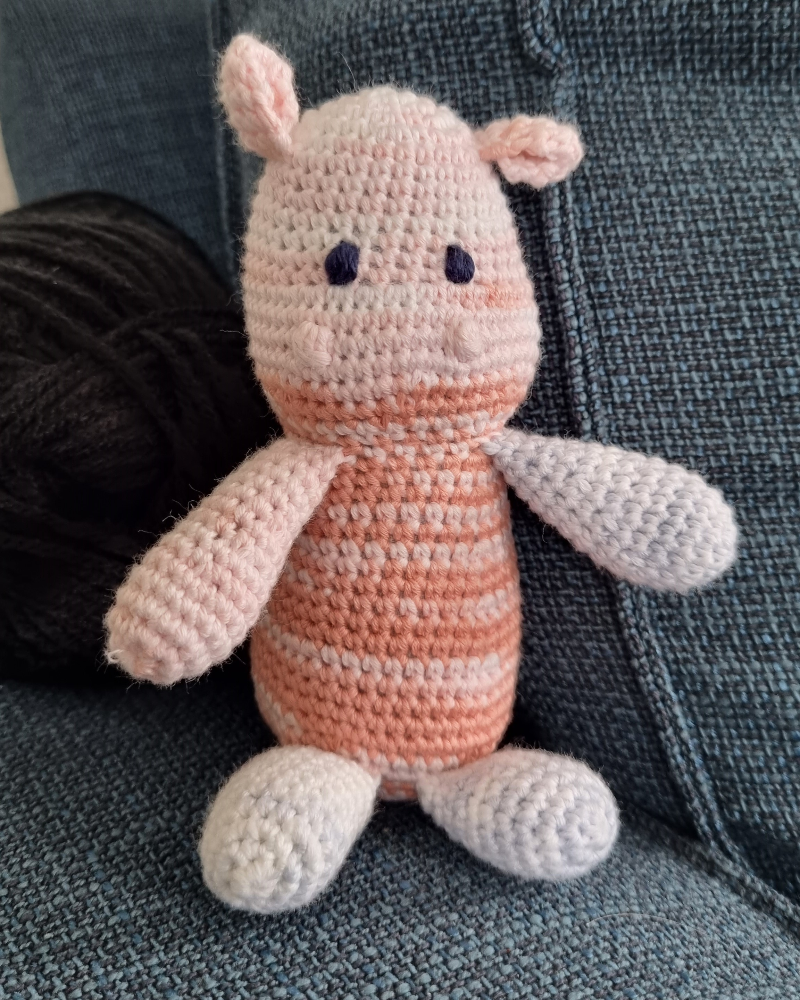
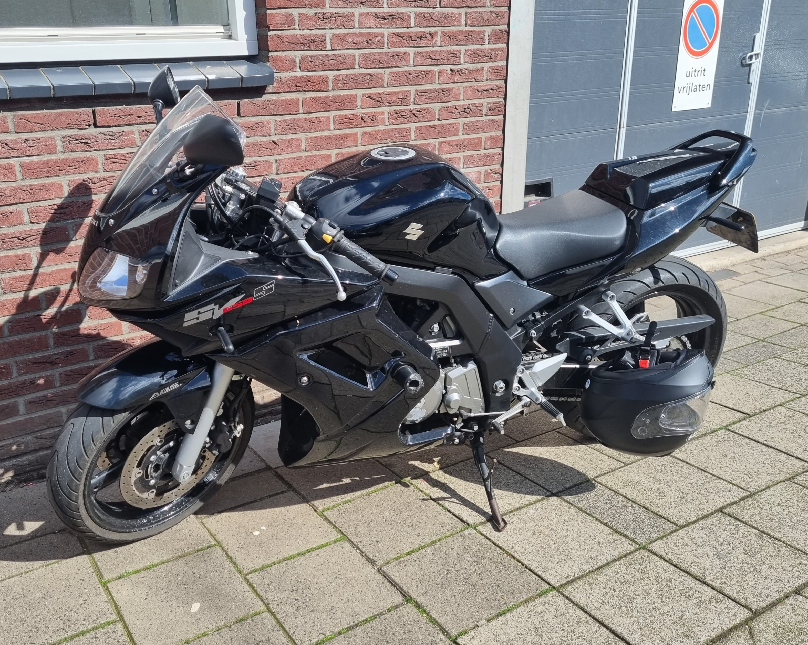
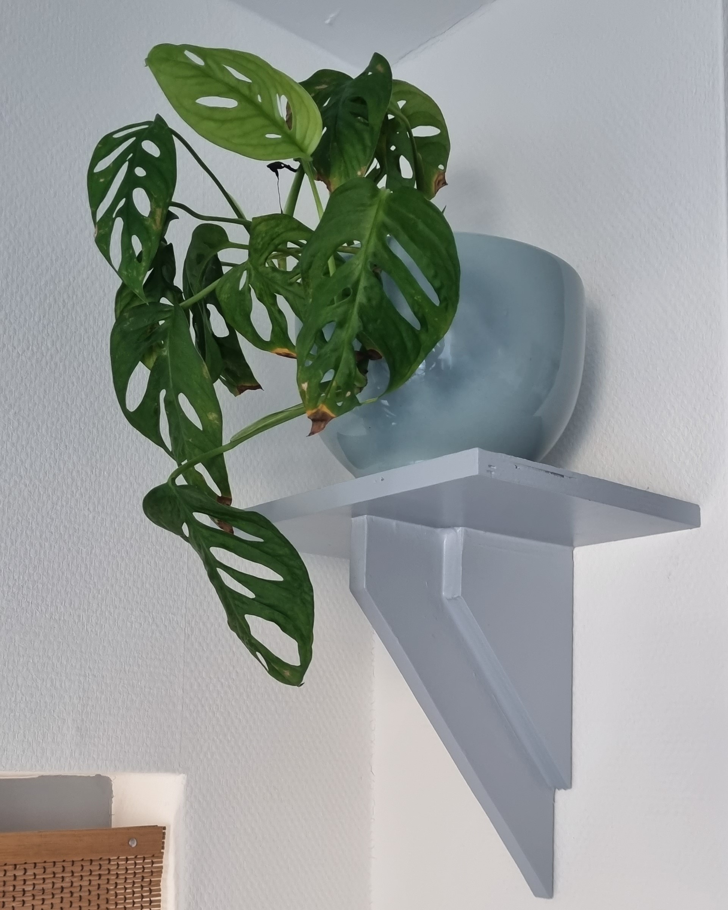

Over mij
Knutselen
is een van mijn grooste hobbies. Ik geef het niet graag toe omdat het truttig klinkt maar het is een goede uitlaatklep voor mijn creativiteit. En in de praktijk is het niet zo oudbollig als je zou denken. Het is meer een overkoepelend woord voor allerlei activiteiten die ik met mijn handen doe zoals haken, naaien, kaarten maken, lampenkappen maken.Iedere maandagochtend ga ik naar mijn haakclubje, genaamt Haak-Aan, hier zit ik met vier andere dames enthousiast te haken en breien. We maken truien, sokken, diertjes, vesten en ik ben nu bezig met een deken. Haken geeft me veel rust en zorgt dat ik ondertussen niet kan snacken en ondertussen zijn de dames van de haakclub mijn vriendinnen geworden.
De afgelopen 20 weken heb ik een naaicursus gevolgd bij een cultuurwerkplaats in de buurt. Voor de cursus kon ik al wat simpele dingen maken zoals de kussenslopen van overhemden en gordijnen inkorten. Maar tijdens de cursus heb ik geleerd om met patronen te werken, biaisband aan te zetten en werken met een lock-machine. Ik heb een tas met etui gemaakt en een kimono. Het is veel werk maar heel voldoenend en ik merk dat ik er veel energie van krijg.

Motorrijden
doe ik sinds 3 jaar. Eerst had ik een Yamaha Diversion XJ900S maar helaas heb ik daarvorig jaar een ongelukje mee gehad. Hierdoor werdt de motor total loss verklaard en heb ik bijna een jaar niet gereden. Sinds kort heb ik een Suzuki SV650 met ABS, om zo ongelukjes in de toekomst te voorkomen. De komende tijd wil ik er een verhoogd stuur en zadel op zetten om zo de zithouding comfortabeler te maken. Hierdoor kan ik de motor ook voor woon-werk verkeer gebruiken.